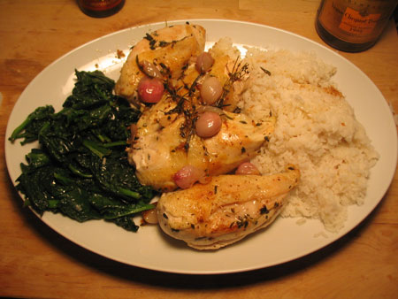

Dinner with Uncle Ted and Emily
Last night Uncle Teddy and Emily B came over for dinner to celebrate her glamorous new job at MoMA and I made this:

I pan-roasted chicken breasts that I had marinated over night in garlic, lemon, and herbs, and I teamed that with sautéed spinach and rice. I wanted to have red potatoes instead of rice, but I didn’t have time for Whole Foods and the selection at d’Ag was too depressing. For appetizers, I sliced up comice pears and oranges and covered them with Roquefort and a bit of Oka’s syrupy and delicious balsamic vinegar. We also had some olive bread and rolls from work with an olive oil dip. We drank the champagne I got as a Christmas bonus, and Emily brought an excellent bottle of Château Greysac. For dessert we had ice cream and my chocolate chip cookies.
It was a long and lovely meal. I wondered about this marinating business though. How much of a difference do you think it makes with chicken? I pan-roast chicken breasts every week, and this is the first time I’ve done anything overnight to them. I usually just give them a quick brine for an hour before I cook. I didn’t notice any dramatic herb flavor, mostly just aromas. I do enjoy the lemon slices under the skin, though.
Comments
Last night’s dinner was truly delicious. Props to Leland for a scrumptious meal- and god, were those FCI rolls delicious as well!!
This is my first posting on a blog and frankly, I’m liking it.
I’m glad you liked it! You and Ted are the world’s best dinner guests.
The chicken was delicious with the lemon.
I suspect that if you did a stronger marinade with some asian sauce/herbs, that the chicken might absorb more of the flavors. But, since this marinade was relatively mild it appeared not to do much more than normal.
Scrumptious!!
Add a comment